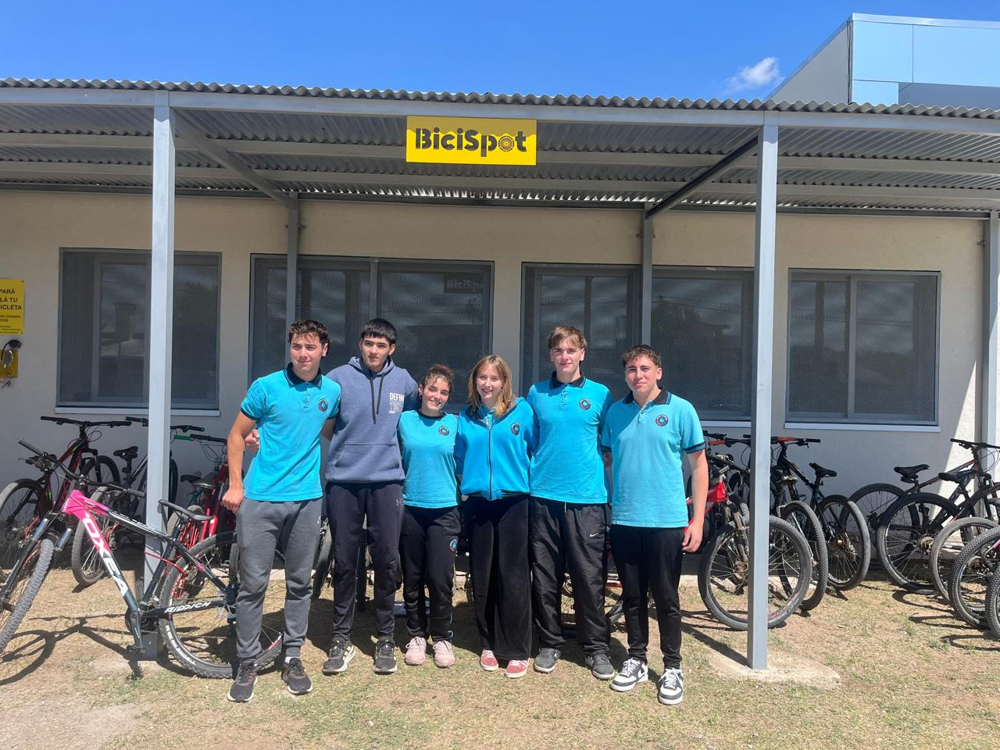
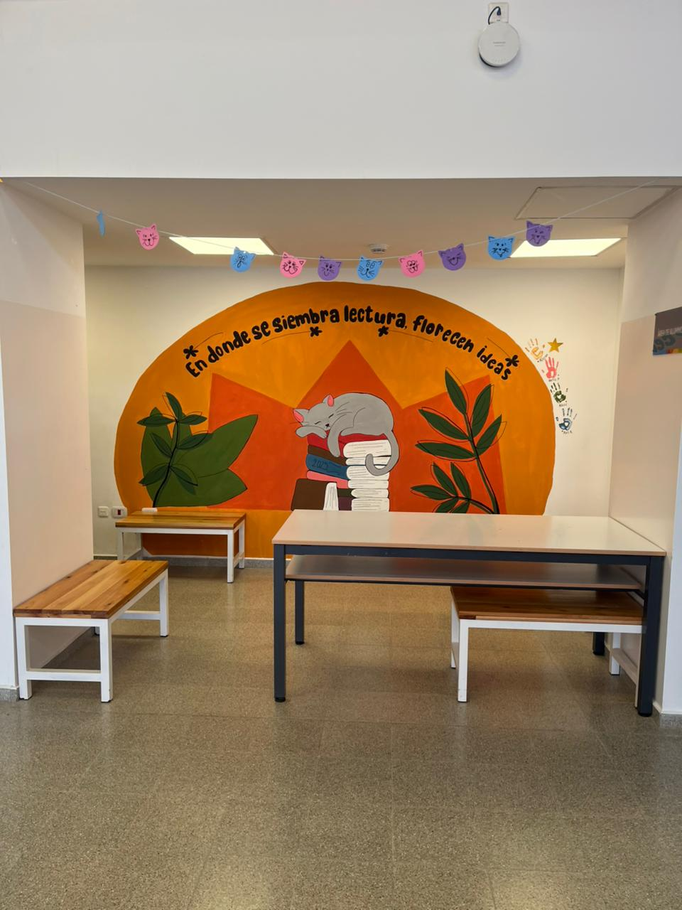
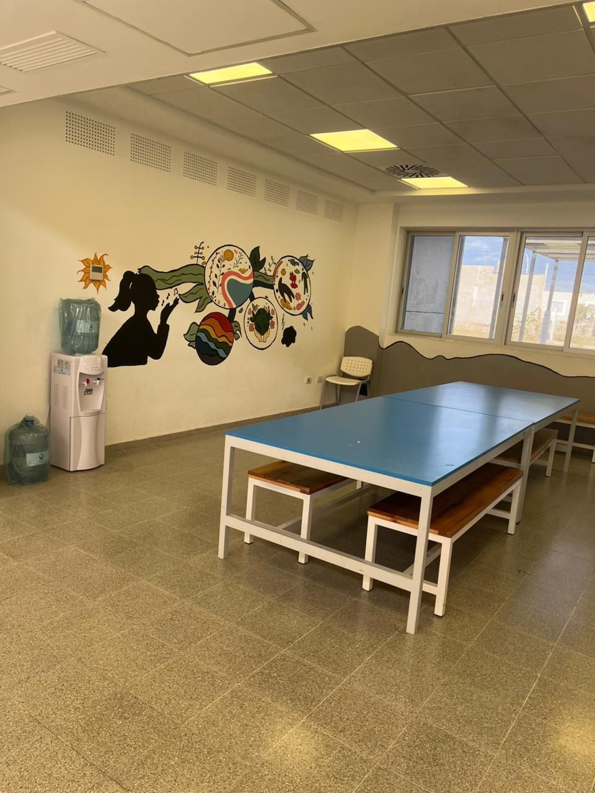

Bike Spot — Movilidad Ecológica
Sistema inteligente de gestión y monitoreo del estacionamiento de bicicletas ecológicas del colegio, incentivando la movilidad sostenible.

Muestra Inmersiva de Apps
Plataformas web, aplicaciones móviles y soluciones de automatización programadas por los estudiantes de ciclo orientado.

Jardín & Huerta Inteligente
Integración de sensores de humedad y riego automatizado aplicados al cultivo escolar sustentable y al aprendizaje botánico.

Biblioteca Digital PRoA
Catalogo online y sistema de reserva digital para material bibliográfico, guías de estudio y recursos multimedia escolares.

Mural Digital & Expresión
Espacio colaborativo de diseño visual y expresión cultural que fusiona la identidad institucional con arte digital.
Recorrido Institucional PRoA
Muestra audiovisual de las instalaciones, laboratorios y actividades cotidianas de nuestra comunidad educativa.